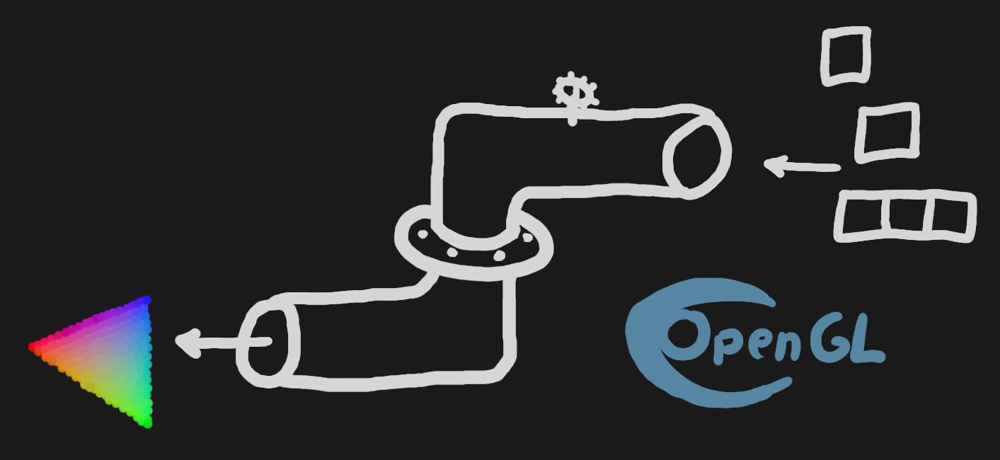
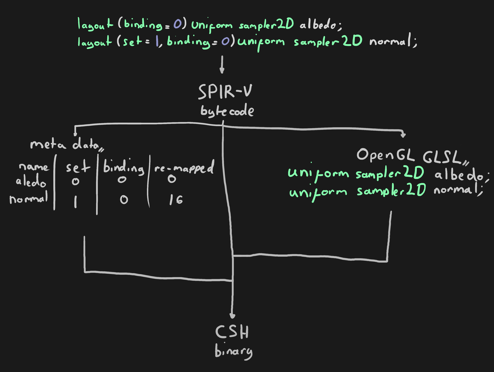

November 8, 2022
Not so long ago, I added an OpenGL backend to my graphics framework, Corrosion. My framework was designed initially as a fairly thin wrapper over the Vulkan API, with direct abstractions over Vulkan graphics pipelines. This doesn't translate well to OpenGL's global state machine and OpenGL's way of sending data to shaders, so a system that emulates Vulkan pipelines in OpenGL is necessary. Since I wanted to support Emscripten (which was the whole idea behind adding an OpenGL backend), I couldn't use many of the more modern OpenGL features that would make this more trivial (such as being able to directly specify sampler bind points in the shader).
struct pipeline* pipeline = video.new_pipeline(
flags,
shader,
target_framebuffer,
vertex_attributes,
descriptor_sets
);
/* Every frame: */
video.begin_pipeline(pipeline);
/* Submit draw commands */
video.end_pipeline(pipeline);
/* On pipeline creation: */
if (flags & pipeline_flags_depth_test)
vector_push(pipeline->to_enable, GL_DEPTH_TEST);
if (flags & pipeline_flags_dynamic_scissor)
vector_push(pipeline->to_enable, GL_SCISSOR_TEST);
/* On pipeline begin: */
for (usize i = 0; i < vector_count(pipeline->to_enable); i++) {
glEnable(pipeline->to_enable[i]);
}
/* Same thing for pipeline end, except calling glDisable instead of glEnable. */
The first step to supporting descriptor is in the shader compiler. The shader compilation process looks like this:
glActiveTexture can be used to bind textures to the correct location.
The bind_pipeline_descriptor_set function takes a pointer to a Corrosion pipeline, a
null-terminated string for the name of the descriptor set and a target index where the
pipeline will be bound to. In the Vulkan backend, this translates into a hash table
lookup to get a handle to the descriptor from the name and a call to
vkCmdBindDescriptorSets. In OpenGL, it's a bit more involved: It iterates all of the
descriptors in the descriptor set, remaps the descriptor bind point to match the
target bind point for the set, then either calls glActiveTexture and glBindTexture for
a sampler descriptor or glBindBufferBase for a uniform buffer.
Binding remapping is done with the following formula:
location = set_index * 16 + binding
This has the effect of allowing sixteen descriptors per set, which is a reasonable limit
in my opinion. Since OpenGL doesn't allow texture bindings over GL_TEXTURE0 + k, where k
is the value of GL_MAX_COMBINED_TEXTURE_IMAGE_UNITS, which may be as low as 16, this won't
work in a lot of cases where more than one descriptor set is bound at once. To get around
this, the shader compiler generates an incremental bind location for samplers, then a
hash table lookup is used to convert the re-mapped location to get said generated location.
glEnableVertexAttribArray, glVertexAttribDivisor and glVertexAttribPointer in
accordance to the configuration passed into new_pipeline). However, OpenGL requires a
vertex buffer to be bound when the VAO is configured, which I can't do in this case
due to how Corrosion separates vertex buffers from vertex attribute configurations;
Vertex buffers are separate objects to pipelines where vertex attributes are configured.
In OpenGL 4.3, the functions glBindVertexBuffer and glVertexBindingDivisor were
added, which allow vertex buffers to be separate from VAOs. However, I cannot use
these functions since I'm targeting OpenGL ES 3.0.
What I had to do instead was create a VAO as part of the pipeline, but instead of
configuring it on every binding, it's configured in the bind_vertex_buffer function,
which first binds the vertex buffer, then configures the VAO. This is unfortunate as it
makes caching the state of the VAO impossible, however setting up a VAO isn't that
performance intensive (there isn't any extra allocation that happens, since the VAO can
still be allocated at the beginning, it just can't be configured on pipeline creation).
There are still bugs and unimplemented features in the Emscripten platform implementation (such as the file-system API), but they're unrelated to the OpenGL backend.